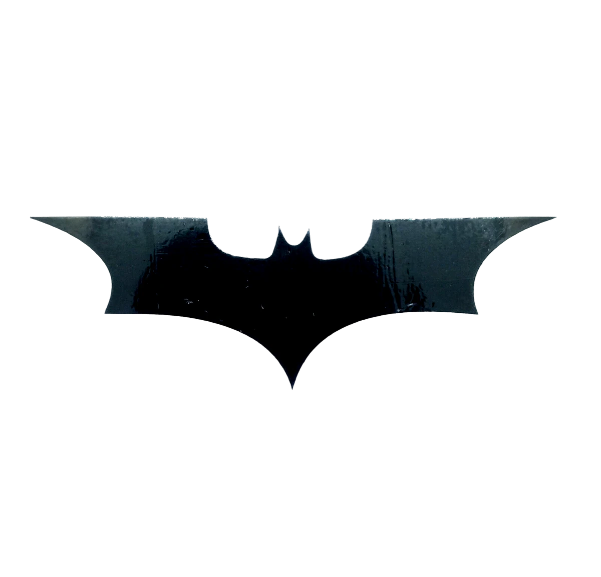
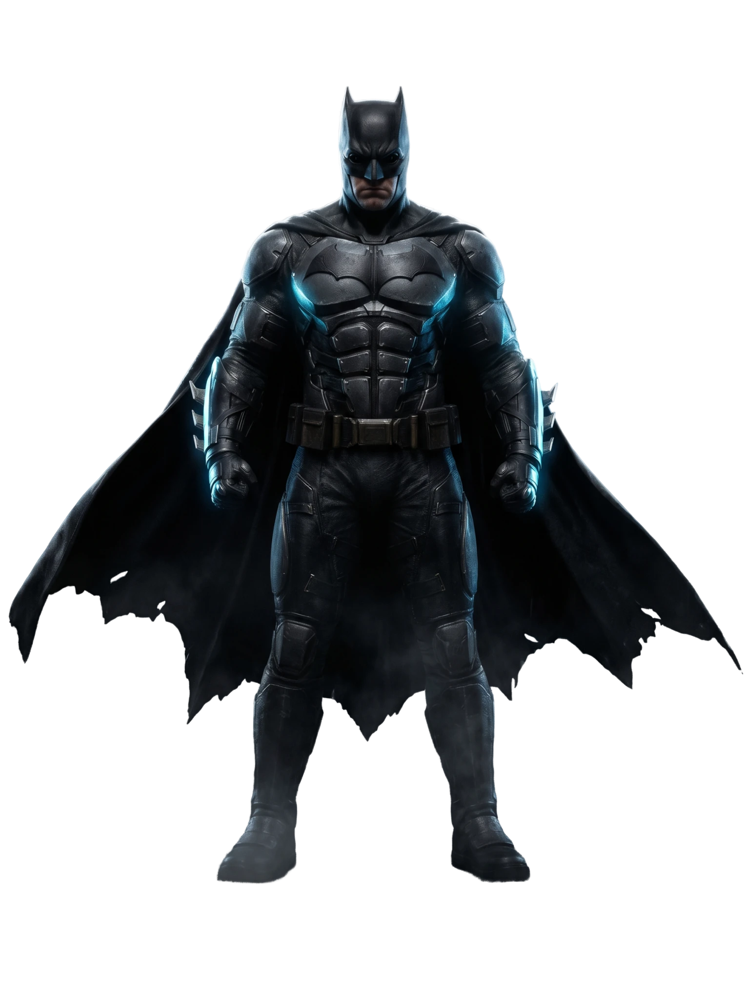

He weaponized grief into myth
Batman feels larger than life because Bruce Wayne built the symbol to outgrow the man.

BatmanThe city answers to the shadows

A premium poster-style landing page built for a Gotham legend: shadow, steel, smoke, and cold lunar light.
Gotham is waiting for the next chapter. This release block is styled to feel closer to the Behance reference: cleaner, calmer, more editorial, and built around the date instead of the trivia panel.
Countdown to theatrical release
Reframed with a cleaner editorial rhythm: bold type, measured spacing, noir contrast, and dossier blocks that feel closer to a premium concept spread.
Batman feels larger than life because Bruce Wayne built the symbol to outgrow the man.
The city answers to the shadows.
Steel-blue glow, rain-soaked glass, and a skyline that never fully sleeps.
Dockyards. Narrows rooftops. Financial district towers. Every zone keeps its own rumor, and every rumor eventually points back to the same silhouette.
Oversized type, atmospheric depth, restrained motion, and a bat-swarm transition that turns navigation into part of the mood instead of an interruption.
Open Gotham Archive